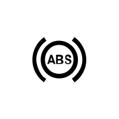
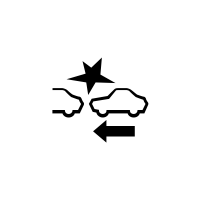

 ışık söner.–Sürekli yanmaya devam ederse, bir an önce Marka Yetkili Servisi’ne başvurunuz;–yanıp sönerse, motor devrini yanıp sönme kesilene dek düşürünüz. Vakit geçirmeden Marka Yetkili Servisi’ne başvurunuz.Bölüm 2’deki “Hava kirliliğini önleme, yakıt ekonomisi ve sürüş ile ilgili öneriler” paragrafına bakınız.")
 takılı değilse, araç yaklaşık 20 km/sa.e ulaştığında yanıp söner ve yaklaşık 2 dakika boyunca sesli bir ikaz duyulur.Not: Minder üzerine konulmuş bir nesne ikaz ışığını çalıştırabilir.")